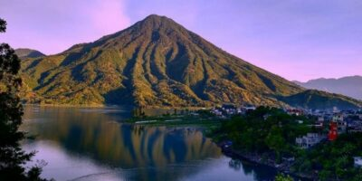

Atitlán

Santiago Atitlán es un punto cultural en el Lago de Atitlán, su iglesia por ser de las más
grandes y antiguas fundadas en el territorio de los Tzu’tujiles tiene renombre y una historia
que traspasa los años. Su esplendor reflejado en calles coloridas y llenas de comercio dan
la bienvenida al turista.
Es conocido por sus alfombras elaboradas con flores y frutas durante la celebración de Semana
Santa y por Rilaj Man (El gran abuelo) popularmente conocido como Maximon. Los turistas pueden
ir a visitarlo y así observar y conocer la tradición sobre este personaje en Santiago Atitlán,
siempre manteniendo el debido respeto.
En Guatemala, el Día de Todos los Santos o Día de los Muertos se celebra el 1ro de Noviembre,
dependiendo de la región se celebra de diferentes maneras. Las tradiciones más características
son: los barriletes gigantes de Sumpango, Sacatepéquez, El Fiambre, Los molletes, visita a los
cementerios, visita a las Criptas de la Catedral Metropolitana.
En los departamentos la tradición de visitar los cementerios varía en comparación de la Ciudad de Guatemala. Los ladinos visitan a sus seres queridos durante
el día, llevándoles flores, comida entre otras cosas. En el interior de la República los Ancestros Mayas visitan a sus seres queridos por la noche, dando un
espectáculo impresionante con veladoras que recorren los senderos que se ubican en lo alto de montañas.
Durante el día se realizan diferentes actividades niños y adultos se dirigen hacia la pista de aterrizaje ubica después de la aldea Tzanchaj, existen diferentes
lugares para realizar actividades. Se debe tener consideración que por la tarde baja neblina de la montaña y el clima se torna frío y húmedo. Los niños disfrutan
de la tradición, mientras los pobladores se preparan para visitar a sus difuntos.
En la salida de Santiago Atitlán hacia San Pedro la Laguna, se debe tomar el camino de la izquierda para poder subir la cuesta hacia el cementerio. Desde la
salida, el sendero y el cementerio se encuentran debidamente iluminados, llenos de ventas de comida típica así como churrasco. Las personas suben aproximadamente
por 10 a 15 minutos. Llegan personas de muchos lugares por lo cual hay que tener paciencia al subir.
Desde la cima se puede apreciar el Lago de Atitlán y observar los reflejos de las luces sobre él y la iluminación del pueblo de Santiago Atitlán. La música adorna
la celebración conjunto bebidas.Al llegar a la entrada del cementerio se encuentra una casa en donde las personas se reúnen y piden a Guías Espirituales que
realizan la función de comunicar mensajes al más allá (a sus seres queridos) la ofrenda para dicha labor regularmente es un 8vo de Indita (Quetzalteca) entre
otras bebidas. Las personas son muy amenas, la celebración continúa hasta la madrugada. Todo el cementerio se adorna con veladoras a la orilla de las tumbas, que indican el camino.
Santiago Atitlán ofrece diversidad de opciones gastronómicas por el frío de la noche se hacen muy apetitosos los churrascos. Partiendo del parque a mano
izquierda se sube una cuadra y se dobla hacia la izquierda al llegar a la esquina se cruza a mano derecha en donde se visualiza helados sarita; a la
par de los helados se encuentra un local de piedra en donde hay bancas y mesas. Ofrecen hamburguesas, panes, churrascos entre otras comidas.
Para quien guste de algo más sofisticado en la calle principal hay diferentes cafés que cuentan con WiFi, así como el restaurante El Pescador entre otros.La
Bebida típica es el Matz y el platillo el Patín.
Nota: Puede ver mas en este pagina